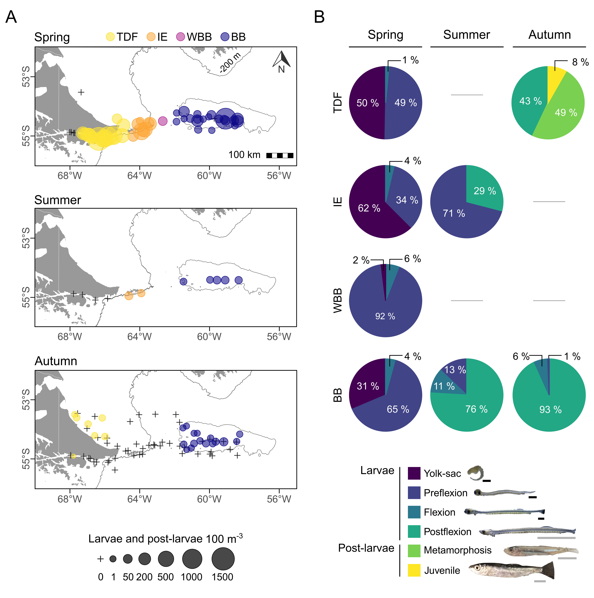
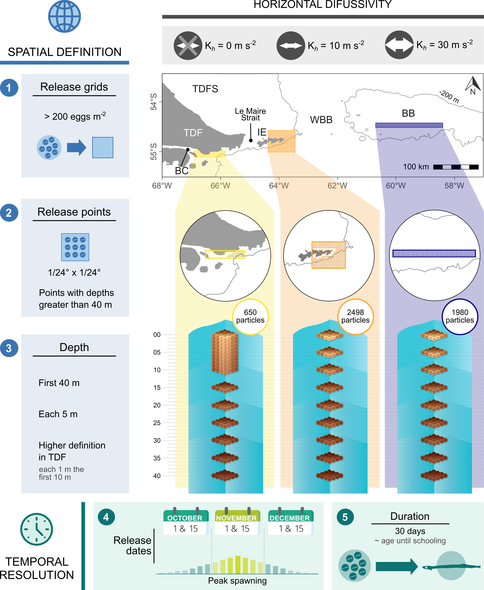
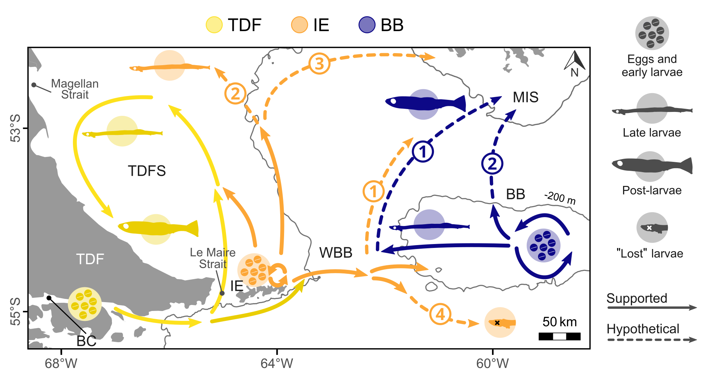

Following my interest and passion for Marine Sciences, I participated in various projects and carried out diverse research studies involving marine ecosystems.
Interdisciplinary study of Fuegian sprat
During my PhD and Postdoctoral postion I carried out an project with oceanographers and fellow biologists in which I studied early life stages of Fuegian sprat (Sprattus fuegensis) 🐟. This species is one of the most important pelagic resources in the Southwest Atlantic Ocean and, due to their high abundance and intermediary trophic role, they represent a key species in the marine ecosystems they inhabit.
The main objective of this project was to assess their early stages’ spatial and temporal dynamics and their relation with abiotic and biotic factors.
We were able to collect samples in 7 oceanographic surveys carried out in Argentina´s first Marine Protected Area “Namuncurá” at Burdwood Bank for the first time and in western adjacent areas towards Tierra del Fuego. These surveys ocurred in spring, summer and autumn in both of the places mentioned, allowing the comparisson of spatio-temporal patterns. Also, we were able to count with biotic (zooplancton) and abiotic (water temperature and salinity) variables from the same samples.
Below are the different analyses we carried out and the main results.
Spatiotemporal distribution and connectivity patterns
The distribution patterns of fish early life stages are critical to recruitment success and closely related to major oceanographic circulation patterns, reason why we explored the spatio-temporal distribution of early life stages of Fuegian sprat in all of the surveys.
Results revealed significant seasonal fluctuations in abundance, distribution, and ontogenetic composition across habitats. High egg and early larval abundances at Isla de los Estados (IE) suggested it as an additional spawning ground to those previously identified at TDF and BB. However, only the latter appeared to be suitable nursery areas.

We then conducted particle-tracking simulations based on egg abundance and spawning dates for the first time using results from a high-resolution hydrodynamic model.

Particle transport provided evidence of connectivity between IE and neighbouring areas—enhanced when horizontal diffusivity is incorporated into the model—but not between TDF and BB.

Simulated distributions closely resembled empirical patterns from this and other studies, allowing the integration of empirical and modelled data to schematize the species’ dispersal pathways in the study area.

These results offered new insights into distribution and connectivity patterns among spawning grounds and highlighted the potential use of hydrodynamic models for future assessments of Fuegian sprat and other planktonic species’ dispersal and recruitment in the SWAO.
García Alonso VA, Franco BC, Palma ED, Pájaro M, Capitanio FL Integration of empirical and modelled data unravels spatiotemporal distribution and connectivity patterns of Fuegian sprat early life stages Mar Ecol Prog Ser :MFCav9. https://doi.org/10.3354/meps14329